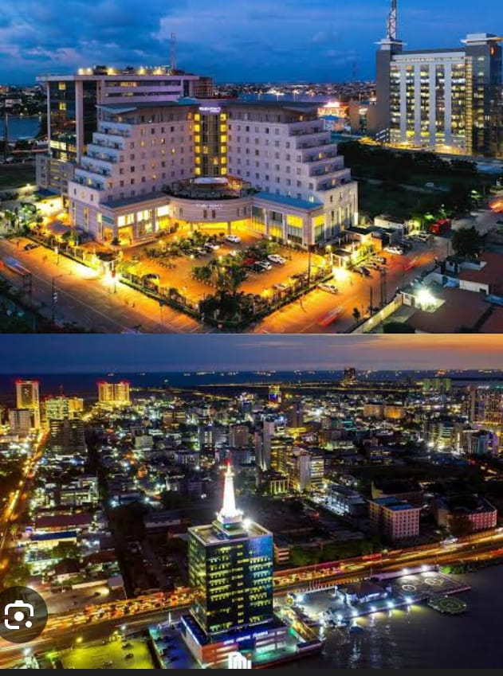
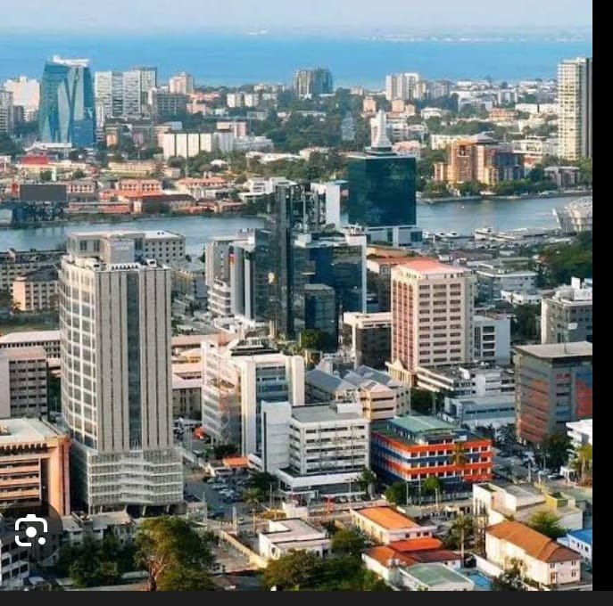

my favorite city in nigeria is LAGOS city. LAGOS city is one of the most busiest cities around the word located at the south west region of nigeria, on the atlantic coast with 3577 kilometer squre land area, lagos is a heavy business hub with GDP of about $259,000,000 and a mass population of 20-25 million people.


LAGOS is a city of many oportunities where business, education, science and technology thrive. there is a lot of entertainment which attracts many prominent people, the whether in lagos is very friendly and the people in lagos are rich in hospitality.